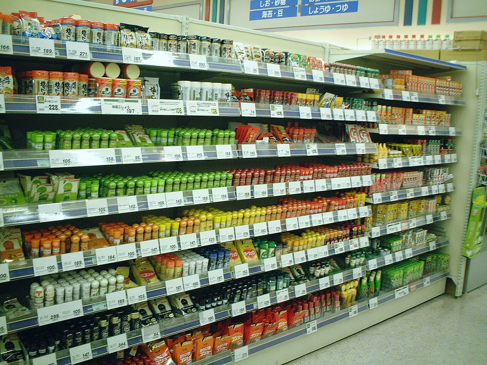
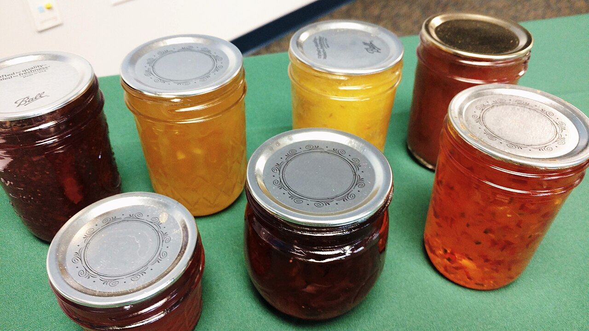
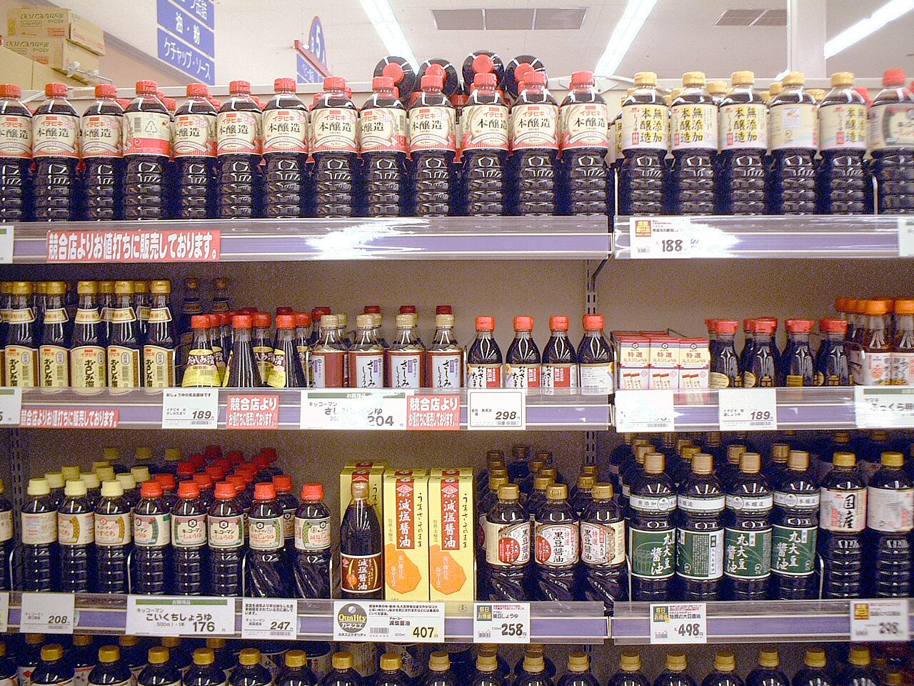
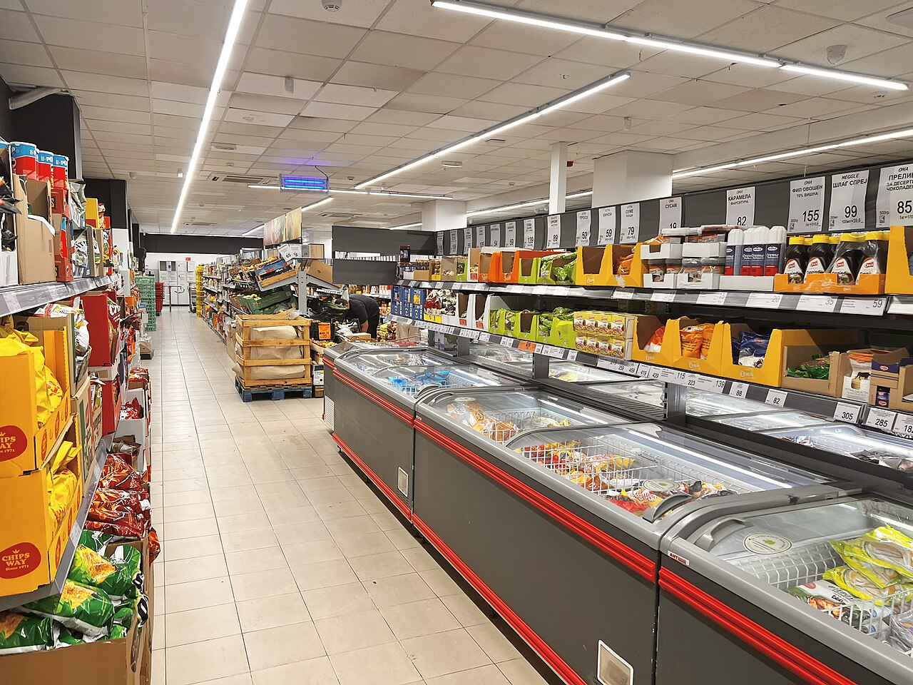
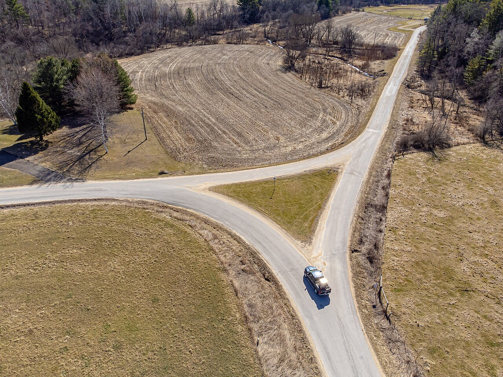
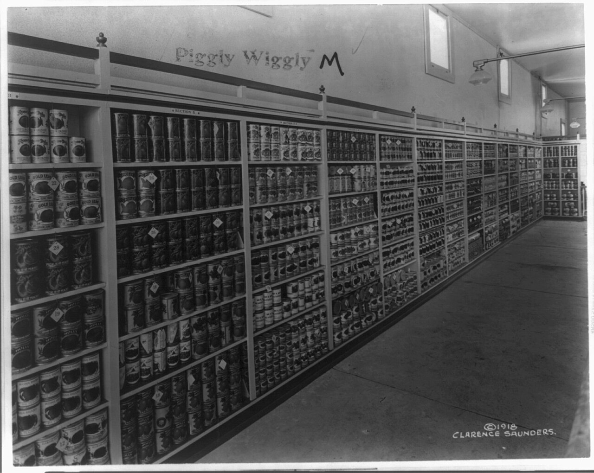
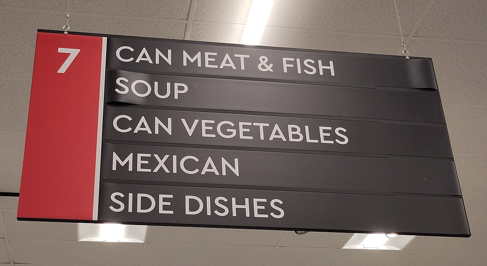
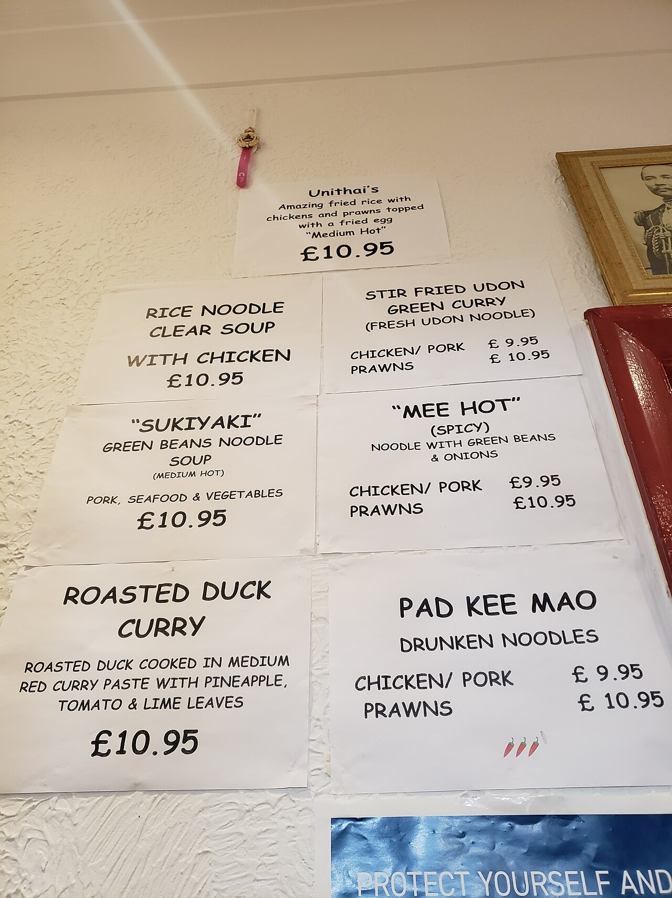

人間・心理 Human & Mind選択肢が多いと、なぜ決められなくなる？
選べるものが多いほどうれしいはずなのに、棚の前で迷って何も買わずに帰ることがあります。有名なジャムの実験の結果を棒グラフで、くらべる組み合わせの増え方を点と線の図で見ていきます。迷いを生むのは、本当に「数」なのでしょうか？
2026.10.24 UP 約5分で読める 文：SOMOSOMO編集部
写真：スパイス売り場／Kanesue（2007年、パブリックドメイン）
アメリカ、カリフォルニア州メンロパーク。2000年に論文で発表された実験で、ジャムだけで300種類以上をそろえる高級スーパーの店内に、試食台が置かれました。2週続けての土曜日、並べるジャムを1時間ごとに24種類と6種類で入れ替えます。立ち寄った人には、1ドル引きのクーポンを渡しました。
お菓子の棚、動画のおすすめ、レストランのメニュー。身の回りは選択肢であふれています。選べるものが多いほどうれしいはずなのに、迷ったまま何も選ばずに終わることもあります。選択肢が多いと、なぜ決められなくなるのでしょうか。
In a word
選択肢が増えると、くらべる組み合わせ が急に増え、「選ばない」「今のままでいい」に流れやすくなると考えられています。ただし、これはいつも起きるわけではありません 。好みがはっきりしないときや、くらべにくいときに起きやすいことがわかってきました。
01
The Jam Table
24種類は人を集め、6種類はよく売れた
この実験を行ったのは、心理学者のシーナ・アイエンガーとマーク・レッパーです。2日間で観察した客は約750人。目立たない係が、試食台の前を通りかかった人と、立ち寄った人の数を数えました。
人を多くひきつけたのは、24種類の台でした。通りかかった人のうち、立ち寄ったのは60%。6種類の台では40%です。ところが、あとでクーポンを使ってジャムを買った人を数えると、結果は逆になりました。
Fig.01 立ち寄った人と、買った人
試食台に立ち寄った人
通りかかった人のうち
24種類
60%（145人）
6種類
40%（104人）
ジャムを買った人
立ち寄った人のうち
24種類
3%（4人）
6種類
約30%（31人）
人を集めたのは24種類、売れたのは6種類
見どころは、上と下で長い棒が入れ替わること。立ち寄った人は24種類の台のほうが多いのに、買った人の割合は6種類の台が約10倍でした。数字は Iyengar と Lepper の論文（2000年）によります。
6種類の台では立ち寄った人の約30%が買ったのに、24種類の台では3%。人数でいえば31人と4人です。並んでいるのを眺めるのは楽しくても、その中から1つに決めるのは難しかったのかもしれません。
研究者たちは、選択肢が多すぎると、かえって選ぶ意欲がそがれると報告しました。この現象はのちに「選択過剰（選択肢が多すぎて、かえって選べなくなること）」と呼ばれ、広く知られるようになります。

ひと目で見渡せる数なら 色のちがうジャムが、テーブルに数びん。これくらいなら、ひと目で見くらべて「今日はこれ」と決められそうです。写真はイメージです。写真：Jams and jellies ／Nutrition, Food Safety & Health（2017年、CC0）
02
Pairs to Compare
品数が4倍なら、くらべる組み合わせは18倍に
なぜ、多いと決めにくいのでしょう。理由の1つは、くらべる組み合わせの多さです。2つずつ並べて「どちらがいいか」をくらべるとすると、6種類なら15組。ところが24種類になると、276組にもなります。
Fig.02 2つずつくらべると、何組になる？
6種類
くらべる組は 15組
24種類
くらべる組は 276組
品数は4倍、くらべる組は約18倍
見どころは、右の円の中を埋めつくす赤い線。点が1つの選択肢、線が「2つをくらべる」1回です。点を4倍にしただけで、線は18倍以上に増えます。組の数は「n×(n−1)÷2」（nは選択肢の数）で求めました。計算は編集部によります。
もちろん、人は全部の組をくらべるわけではありません。それでも、見くらべられる組み合わせは、品数よりずっと速く増えていきます。「もっといいものがあるかもしれない」という迷いの種も、それだけ増えるわけです。


しょうゆの棚から、店の奥まで 左は日本のスーパーのしょうゆ売り場、右は北マケドニアのスーパーの通路です。1つの棚だけでもこれだけ並び、その棚が奥まで続きます。ここから1つを選ぶとき、私たちは何組くらべているのでしょう。写真：Soy sauce in supermarket ／Kanesue（2007年、パブリックドメイン）、Interior of a supermarket in Skopje ／Bdx（2026年、CC0）
03
Staying Put
選べる数が増えるほど、「選ばない」人が増える
もう1つの理由は、「今のまま」に流れやすい心のくせです。1988年、経済学者のウィリアム・サミュエルソンとリチャード・ゼックハウザーは、遺産の運用先を選ぶという想定の質問をしました。ある選択肢を「いまの運用先」として示すと、それがぐっと選ばれやすくなったのです。
これを「現状維持バイアス（今のままを選びがちな、考え方の偏り）」といいます。この偏りは、選択肢が多いほど強まると報告されています。

曲がるか、このまま進むか 道が二手に分かれるとき、迷ったら慣れた道をそのまま進みたくなります。選択肢がもっと多ければ、なおさらです。写真はイメージです。写真：Fork in the road ／Wikideas1（2024年、CC0）
似たことは、お金の選び方でも見られます。アメリカの大手運用会社の顧客の会社を調べた研究では、会社の年金（401(k)という、給料から自分で積み立てる制度）の運用先が多い制度ほど、加入しない人が多い傾向がありました。
Fig.03 運用先の数と、年金の加入率
見どころは、選べる運用先が多い赤い棒のほうが短いこと。ほかの条件をそろえた推計で、2001年の約650の制度をくらべた結果です。数字は Iyengar ほかの研究（2004年）によります。
この研究は、制度どうしを横に並べてくらべたもので、一人ひとりの心の中を確かめたわけではありません。それでも、加入しないことは、いわば「今のまま」を選ぶこと。選べる数が多いと、選ばないほうへ流れやすくなる と考えると、現状維持バイアスともつながって見えてきます。
04
Does It Replicate?
ジャムの実験は、いつも再現するわけではない
ジャムの実験は、本や講演でくり返し紹介されました。ところが、ほかの研究者が似た実験をしても、同じ結果が出ないことがよくありました。心理学では、有名な実験をやり直すと同じ結果にならない「再現性の問題」が、大きな課題になっています。
2010年、スイスやドイツ、アメリカの研究者たちが、選択過剰を調べた50の実験を束ねて分析しました（メタ分析といいます）。強く出た実験もあれば、何も起きなかった実験、選択肢が多いほうが選びやすかった実験もあり、平均するとほぼゼロ でした。
つまり、起きる場面と起きない場面が、打ち消し合っていたのです。そこで2015年、アメリカの研究者たちが、のべ約7,200人分の結果を条件で分けてみました。すると、選択過剰が起きる場面がはっきり見えてきました。
Fig.04 迷いやすくなる4つの条件
選択肢がくらべにくい 特徴がばらばらで、どれが一番かがすぐにはわからない。
決める作業が大変 時間が短い、見るべき項目が多いなど、選ぶこと自体が難しい。
好みがはっきりしない 何がほしいか自分でも決まっていない。その分野にくわしくない。
1つに決めて早く済ませたい 眺めて楽しむのではなく、手間をかけずに1つを選びたいと思っている。
見どころは、どれも「品数そのもの」ではないこと。同じ24種類でも、選ぶ人や並べ方しだいで、迷いやすさが変わります。Chernev ほかの論文（2015年）の4つの条件を、編集部が言いかえました。
では、お店は品数を減らすべきなのでしょうか。答えは「条件しだい」です。ほしいものが決まっている人は、24種類の棚の前でもあまり迷いません。いつものジャムを手に取るだけです。品数より、くらべやすい並べ方や、選ぶ人の準備のほうが効いてくるのです。

自分で選ぶ店の、はじまり 1917〜1918年ごろの、アメリカの食料品店ピグリー・ウィグリー。それまでは店員が品物を集めるのがふつうで、客が棚から自分で選ぶ本格的な売り方は、1916年にこの店で始まったとされます。棚の前で迷う悩みも、ここから広がっていきました。写真：Aisle view in a Piggly Wiggly Supermarket ／Clarence Saunders（1918年、パブリックドメイン）／アメリカ議会図書館所蔵
05
Good Enough
「いちばん」より「これで十分」で選ぶ
選択肢の多い世界で、どう選べばいいのでしょう。ヒントになるのが、学者のハーバート・サイモンが1956年に名づけた「満足化」です。
英語の satisficing（サティスファイシング）は、satisfy（満足する）と suffice（足りる）を合わせた言葉で、全部はくらべず、「これで十分」と思える最初のものを選ぶやり方を指します。
その反対が、いちばんいいものを探し続ける「最大化」です。最大化の人は棚の端から端までくらべ、満足化の人は条件に合う1つが見つかったところで手を止めます。2002年、心理学者のバリー・シュワルツらは、人がどちらに傾きやすいかを測る質問票を作りました。


案内板でも、メニューでも 左はカナダのスーパーの通路の案内板、右は壁にはられた料理のメニューです。売り場を分けて見出しをつけるだけでも、くらべる範囲はぐっとせまくなります。右の写真はイメージです。写真：Supermarket aisle sign in Calgary ／Alarichall（2025年、CC0）、Food menu on the wall ／Andy Li（2023年、CC0）
お店やサービスの側も、選びやすくする工夫をしています。「店員のおすすめ」や売れ筋の目印、値段や用途での絞り込み、迷ったときの「定番」。どれも、くらべる組み合わせを減らしたり、好みが決まっていない人に手がかりを渡したりするしかけといえます。
06
By the Numbers
ジャムの実験は、わざと「なじみのない味」で行われた
300種類以上 実験の店がふだん扱っていたジャムの種類。マスタードは約250種類、オリーブオイルは75種類あったIyengar と Lepper（2000年）
28種類 実験に使ったメーカーのジャムの全種類。いちごなど定番の味を外し、好みが決まっていない24種類にしたIyengar と Lepper（2000年）
74% 同じ論文の別の実験で、6つのテーマから選べた学生が小論文を出した割合。30のテーマでは60%だったIyengar と Lepper（2000年）
Here's the Fun Part
ここが面白い！
2006年に発表された研究で、アイエンガーやシュワルツらは、2001年11月から翌年5月まで、11の大学で就職活動を始めたばかりの最終学年の学生（最初に答えたのは548人）を追いかけました。最初に、最大化に傾くかどうかの質問票に答えてもらいます。
最大化に傾く学生は、そうでない学生より、初任給が約20%高い仕事に就いていました。ところが、得た仕事への満足度は低かった のです。就職活動のあいだも、不安やストレスなどのいやな気持ちを強く感じていました。
研究者たちは、その理由を、選ばなかった仕事や、手にしなかった選択肢のことまで考え続けていたためではないかと見ています。いいものを選んでも、「もっといいものがあったかも」という思いが、満足を削ってしまうのでしょう。
シュワルツらの2002年の調査でも、最大化に傾く人ほど幸福感が低く、後悔しやすい傾向がみられました。ただし、測り方には議論もあり、質問票を作り直すと差が見られなかったという研究もあります。
それでも、選択肢の多さは決めるまでを難しくするだけでなく、決めたあとの気持ちにまで影を落とすことがある ようです。次に棚の前で迷ったら、「これがあれば十分」という条件を1つだけ決めて、それを満たす最初の1つを手に取ってみてください。
出典・参考
Iyengar, S. S. & Lepper, M. R. (2000) When choice is demotivating: Can one desire too much of a good thing? （Journal of Personality and Social Psychology 79）：カリフォルニア州メンロパークの高級スーパー、店の品ぞろえ（ジャム300種類以上・マスタード約250種類・オリーブオイル75種類）、2週続けての土曜日・各5時間、24種類と6種類を1時間ごとに入れ替え、1ドルのクーポン、観察した客は約754人、立ち寄ったのは60%（242人中145人）と40%（260人中104人）、買ったのは3%（4人）と約30%（31人）、メーカーの全28種類から定番の味を外して24種類にしたこと、小論文の実験（6テーマで74%、30テーマで60%が提出）Samuelson, W. & Zeckhauser, R. (1988) Status quo bias in decision making （Journal of Risk and Uncertainty 1）／Status quo bias （Wikipedia 英語版）：遺産の運用先を選ぶ想定の質問、「いまの運用先」とした選択肢が選ばれやすくなったこと、選択肢が多いほど偏りが強まることIyengar, S. S., Huberman, G. & Jiang, W. (2004) How Much Choice is Too Much? Contributions to 401(k) Retirement Plans （ペンシルベニア大学ウォートン校 Pension Research Council の論文、2003年版）：大手運用会社の顧客の2001年の記録、647の制度・分析対象793,794人、運用先は2〜59、運用先が2つで加入率約75%、59で約60%（ほかの条件をそろえた推計）Scheibehenne, B., Greifeneder, R. & Todd, P. M. (2010) Can there ever be too many options? A meta-analytic review of choice overload （Journal of Consumer Research 37）：50の実験・63の条件・5,036人、平均の効果はほぼゼロでばらつきが大きいこと、選択肢が多いほうが選びやすく満足度が高かった研究もあることChernev, A., Böckenholt, U. & Goodman, J. (2015) Choice overload: A conceptual review and meta-analysis （Journal of Consumer Psychology 25）／ノースウェスタン大学ケロッグ経営大学院の紹介ページ ：99の結果・のべ7,202人、4つの条件（選択肢の複雑さ・決める作業の難しさ・好みの不確かさ・手間を減らして1つを選びたいという目的）、条件を入れると品数の効果がはっきりすることPiggly Wiggly （Wikipedia 英語版）：1916年にテネシー州メンフィスで開いた、最初の本格的なセルフサービス式の食料品店とされること、それ以前は店員が品物を集めていたことSatisficing （Wikipedia 英語版）：ハーバート・サイモンが1956年に名づけたこと、satisfy と suffice を合わせた言葉であることIyengar, S. S., Wells, R. E. & Schwartz, B. (2006) Doing better but feeling worse: Looking for the "best" job undermines satisfaction （Psychological Science 17）：11の大学の最終学年の学生、2001年11月・2002年2月・5月の3回調査（最初の回答者548人）、最大化に傾く学生は初任給が20%高いが満足度は低く、いやな気持ちを強く感じたこと、選ばなかった選択肢へのこだわりSchwartz, B., Ward, A., Monterosso, J., Lyubomirsky, S., White, K. & Lehman, D. R. (2002) Maximizing versus satisficing: Happiness is a matter of choice （Journal of Personality and Social Psychology 83）：最大化の傾向を測る質問票、最大化の傾向が幸福感・楽観・満足度と負の、後悔・抑うつと正の相関を示したことDiab, D. L., Gillespie, M. A. & Highhouse, S. (2008) Are maximizers really unhappy? The measurement of maximizing tendency （Judgment and Decision Making 3）：上の質問票への批判。測り方を変えると、最大化の傾向と生活の満足度の関係は見られなかったこと写真：Spice Supermarket Japan ／Kanesue（2007年、パブリックドメイン）。本文中の写真のクレジットは、それぞれの写真の下に記しています（いずれも CC0 またはパブリックドメイン）